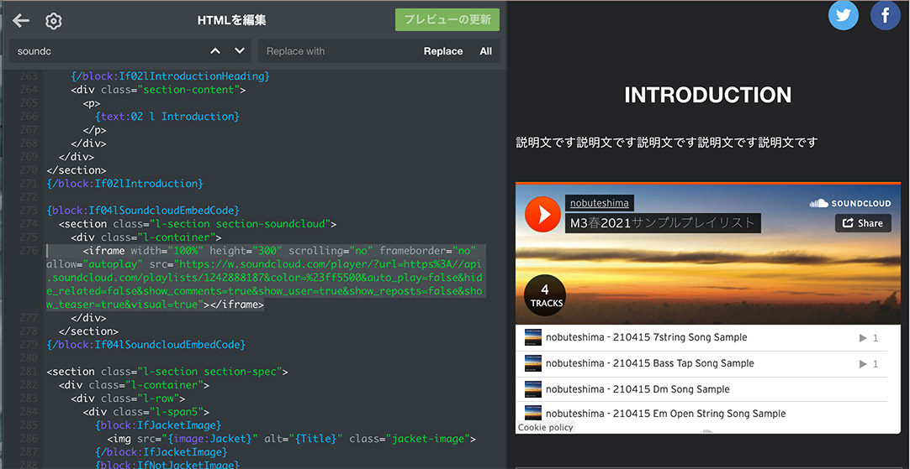

うまく作るコツ
ここでは、よりよい告知サイトを作るテクニックを紹介します。
画像のファイルサイズをなるべく軽くする
画像素材を制作するときは、ファイルサイズが大きくなりすぎないように注意しましょう。特に、Photoshopからpngをそのまま書き出すと重い画像になりがちです。ファイルサイズを軽くする方法はいくつかありますが、TinyPNGなどのサービスを使うと簡単です。
なお、Tumblrのファイルアップローダーは多少ファイルサイズ最適化してくれるようですが、個人的にはあまり期待しないほうがいいと思います。やはり、あらかじめファイルサイズを軽くしておくべきでしょう。
見出しに画像を使う
「イントロダクション」の見出しは画像に置き換えられます。ただのテキストより一手間かかりますが、より完成度が高まって見えるのでおすすめです。下記の例ではフォントを変更しているだけですが、もちろん画像なので自由度の高い装飾が可能です。


見出し画像やサークルロゴなどを高解像度で表示する
Circle Logo Widthなどサイズを指定できる画像では、あらかじめ2倍の解像度で画像を作っておくと高解像度ディスプレイでも綺麗に表示できます。たとえば幅150pxでサークルロゴを表示したい場合、画像は幅300pxでアップロードし、Circle Logo Width欄に「150」と入力すればOKです。
サイズを指定できる画像一覧
- サークルロゴ
- 作品タイトル
- イントロダクション見出し
※大きい画像を使うときはファイルサイズに気をつけましょう。
トラックリスト, スタッフリストを増やしたい
HTMLを直接編集することで増やせます。難しい場合はHTMLの分かる人を呼んで手伝ってもらってください。
トラックリストを増やしたい
- HTML内に次のようなコードが書いてある場所を探します。
- 増やしたいぶんだけ、該当コードの直下にコピペします。
- このとき、インデント（コード行頭の空白）に全角スペースではなく半角スペースを使ってください（全角だと崩れます）。
- コピペしたコードの、下記の10と書いてある場所を11などに書き換えます。
text:05など書かれている部分の数字は整理用の番号なので書き換えなくて大丈夫です。
- 編集したHTMLをTumblrに反映・保存し、テーマカスタマイズ画面をリロードします。
- テーマカスタマイズ画面でカスタマイズ項目が増えていたら成功です。
書き換えるコード1箇所目（HTML上部にあります）
<meta name="text:05 l Track10 Title" content="" /> <meta name="text:05 l Track10 Description" content="" />
書き換えるコード2箇所目（HTMLなかごろにあります）
{block:If05lTrack10Title}
<li class="track-container">
<div class="track-number">10</div>
<div class="track-content">
<span class="track-title">{text:05 l Track10 Title}</span>
<span class="track-meta">{text:05 l Track10 Description}</span>
</div>
</li>
{/block:If05lTrack10Title}
どちらか片方だけ増やしてもうまくいかないので、必ず2種類のコードをどちらも増やしてください。
スタッフリストを増やしたい
- HTML内に次のようなコードが書いてある場所を探します。
- 増やしたいぶんだけ、該当コードの直下にコピペします。
- このとき、インデント（コード行頭の空白）に全角スペースではなく半角スペースを使ってください（全角だと崩れます）。
- コピペしたコードの、下記の06と書いてある場所を07などに書き換えます。
text:07など書かれている部分の数字は整理用の番号なので書き換えなくて大丈夫です。
- 編集したHTMLをTumblrに反映・保存し、テーマカスタマイズ画面をリロードします。
- テーマカスタマイズ画面でカスタマイズ項目が増えていたら成功です。
書き換えるコード1箇所目（HTML上部にあります）
<meta name="text:07 l Staff06 Name" content="" /> <meta name="text:07 l Staff06 Role" content="" /> <meta name="text:07 l Staff06 URL" content="" />
書き換えるコード2箇所目（HTMLなかごろにあります）
{block:If07lStaff06Name}
<li>
<span class="credit-role">{text:07 l Staff06 Role}</span>
<span class="credit-title">{text:07 l Staff06 Name}</span>
<span class="credit-website">
<a href="{text:07 l Staff06 URL}" class="credit-website-link btn">Website</a>
</span>
</li>
{/block:If07lStaff06Name}
どちらか片方だけ増やしてもうまくいかないので、必ず2種類のコードをどちらも増やしてください。
SoundCloudのプレイリストを埋め込みたい
カスタマイズの「Soundcloud Embed Code」で、曲のかわりにプレイリストを埋め込みたい場合、次の手順でテーマのHTMLを編集してください。
- SoundCloudで、埋め込みたいプレイリストの「Share」リンクをクリックします。ウィンドウが開くので、「Embed」タブで埋め込みコードをコピーします。
- コピーしたコードを編集し、
<iframe>~~</iframe>部分だけ残し、その後の<div>~~</div>は削除します。 -
Tumblrの該当サイトの「HTMLを編集」を開き、276行目ごろにある
<iframe>~~</iframe>を 2. のコードと差し替えます。- ※ テーマオプションの「04 | Soundcloud Embed Code」は削除せずそのままにしてください。
